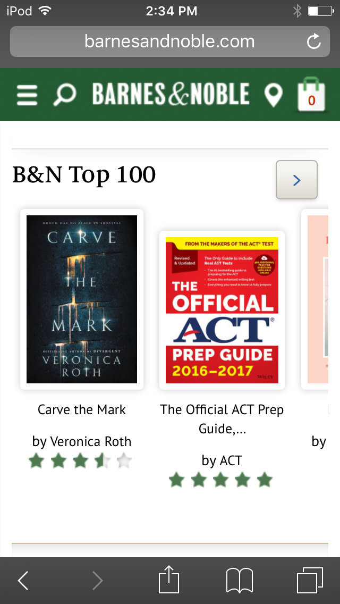
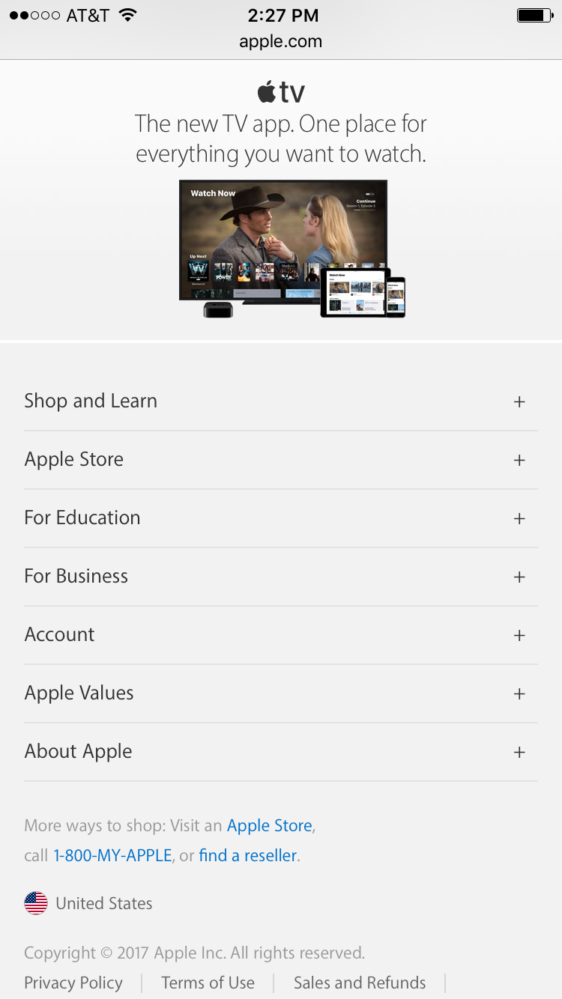
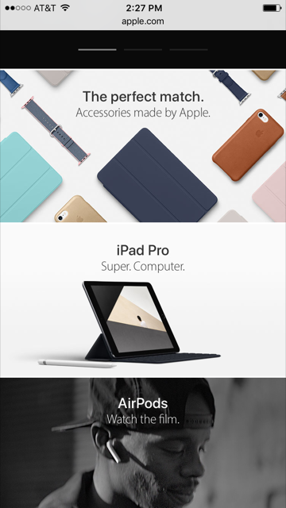
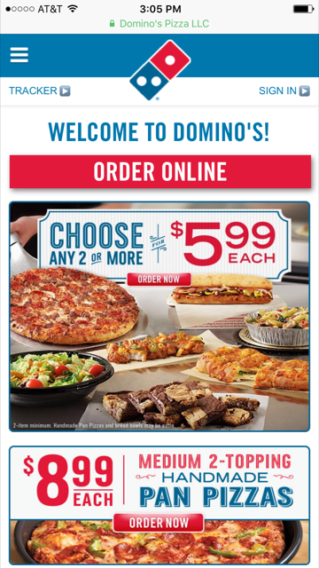
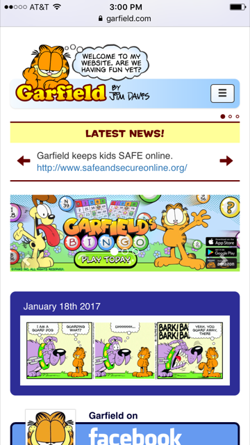
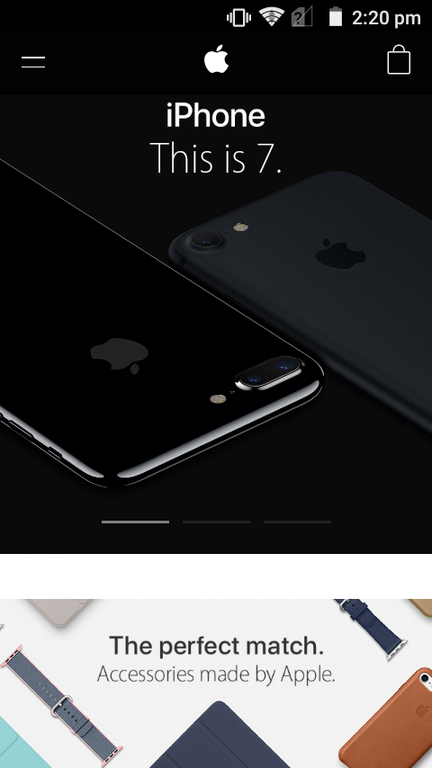

Design Principles in Mobile Sites
Proximity — Dustin Rowbury
barnes&nobles.com
Barnes and Nobles gives a great example of how proximity can help the content not only be understood but also easy on the eyes. For example, the site for Barnes and Nobles has a very clear way of grouping, it uses large boxes that seem to stick out towards the user. Books that are similar are included all in one of these boxes that can be swiped to one side to show more of a similar type of item. If the book is of a different topic they have a different box that is for items that are related to that other topic. They do an excellent job of keeping everything far enough away from each other using white space that the site is easy on the eyes and isn’t confusing. This all makes for a great site the leads the eye and doesn’t confuse it while doing so.
Alignment — Morgan Orton
apple.com
The website apple.com demonstrates the traits of effective website alignment. Their layout allows smooth navigation and easy-to-access material. Some examples of their alignment are contained in the footer of the mobile website as shown below:

In this example, the footer table of contents is clearly left aligned and makes it easy for the user to identify each option. Also note that the advertising above it is not left aligned which sets it apart from the table of contents without having to change the color or typography.
Another example is the middle of their website, where they are advertising their new products and providing links for users to learn more.
 Alignment is a key element in this presentation because it groups the similar items together. There is a sense of unity because the text is consistently aligned in the center and the pictures are all aligned next to each other. Areas on the homepage that do not advertise new products are not aligned in this way, thus making the products stand out for the user. Because of alignment, this website is very organized.
Repetition — Matthew Sortomme
dominoes.com
The pictures used all feature pizzas and such food, keeping the theme of the store. Reds and blues are used in most text or backgrounds to make a unifying theme across the page.
Contrast — Matthew Sortomme
garfield.com
First a theme of blues and orange create a color contrast. The navigation bar’s home button is the shape of the cat character with a subtle outline and bright colors drawing emphasis to it. With the white background the blue border around the featured comic draws attention to that section.
Typography — Daniel Sedrick
apple.com
The principles of typography are displayed on the Apple website very well. They vary their line weight in their photos to emphasize the title and the subtext. Their titles have much closer tracking than in the other text. They also vary their line weight to show bolder titles, which serve to announce the product, and then showing the description in sleeker text, giving a classy and professional feel. As well, Apple Inc. uses a slim font that is trademark to their products.